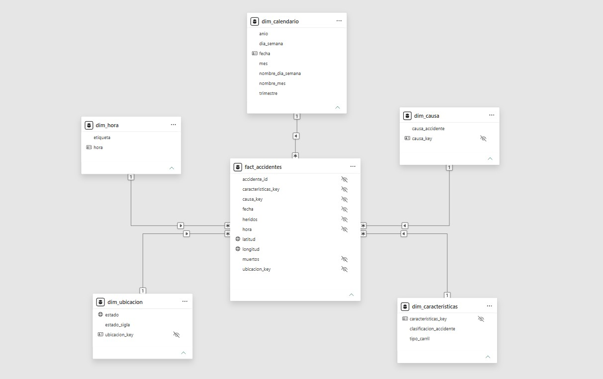

Power BI lee solo de gold
Por qué: la lógica de transformación queda en el ETL, en un solo lugar y versionada. El modelo semántico solo relaciona y calcula.
Muestra cuándo, dónde y por qué ocurren los accidentes en las carreteras federales del sudeste de Brasil, para decidir las rutas de una expansión logística.
03 Caso de negocio
Una empresa de logística evalúa expandir su operación al sudeste de Brasil. Su equipo de seguridad encontró que las carreteras federales concentran la mayor cantidad de accidentes, y la Dirección pidió una vista única de 2018 a 2020 antes de definir las rutas.
04 Arquitectura
Arquitectura Medallion con notebooks de Python. Cada capa valida sus datos antes de escribir.
Archivo tal como se recibió. No se modifica.
Copia fiel de la fuente con columnas de auditoría.
Datos limpios y tipados con las reglas que salieron del perfilado.
Modelo estrella: un hecho de accidentes y cinco dimensiones.
Relaciones y medidas DAX sobre las tablas de gold.
Una página con filtros por año y clasificación del accidente.
05 Modelo de datos
Un hecho, fact_accidentes, con un accidente por fila, y cinco dimensiones: calendario, hora, ubicación, causa y características.

06 Decisiones técnicas
Por qué: la lógica de transformación queda en el ETL, en un solo lugar y versionada. El modelo semántico solo relaciona y calcula.
Por qué: cada capa revisa sus reglas antes de escribir. Si una falla, el notebook se detiene y no genera el archivo, así un dato que no cumple no llega al reporte.
Por qué: el modelo y el reporte quedan como texto, y Git muestra qué cambió en cada medida, relación o visual.
Por qué: con 60.531 filas un motor distribuido no aporta nada. La lógica queda escrita de forma que se puede llevar a PySpark.
07 Hallazgos
48 %
de los accidentes ocurre de viernes a domingo
Diciembre y enero son los meses pico (5.931 y 5.630 eventos), y el domingo es el día con más accidentes.
54 %
de los accidentes mortales ocurre en carril simple
El carril doble registra más eventos (28 mil contra 25 mil), pero solo el 39 % de los mortales.
537
accidentes mortales por falta de atención de los peatones
No entra en el top 5 general, pero es la tercera causa cuando hay víctimas fatales.
Requerimientos, arquitectura, mapeo fuente-destino, diccionario de datos y los notebooks de cada capa.
Ver repositorioDatos, caso de negocio, plantilla visual y versión original del dashboard: inmersión «Acelerador de Carrera con Power BI» de DaxusLatam, impartida por la Profe Zaira Hurtado. Este proyecto es un trabajo independiente, sin vínculo con DaxusLatam.